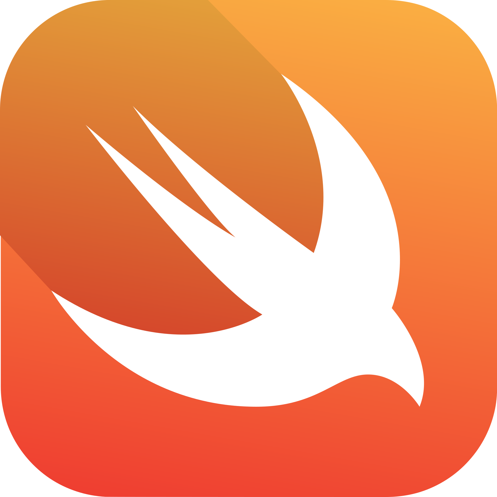

Teck
Stack
Stack
Java
 HTML
HTML
 CSS
CSS
 JavaScript
JavaScript

Swift
Hi, my name is
Gursparsh Singh Sodhi.
I'm a
I am a highly experienced developer with a diverse background in actively participating in collaborative team projects and pursuing individual endeavors. This portfolio serves as a comprehensive showcase of my skills, providing compelling evidence of my ability to excel within a team-oriented environment and showcasing my deep passion for independent projects and creative initiatives.
HTML
CSS
JavaScript

I'm Gursparsh Singh Sodhi, an international student hailing from the vibrant culture of India. My lifelong curiosity about science and technology led me to pursue a computer science major, where I uncover the intricate workings of the digital realm. Beyond academics, I'm an avid reader, particularly drawn to the world of entrepreneurship and the inspiring tales of accomplished individuals. My love for sports, marked by numerous roller skating accolades, has now expanded to include basketball as my current passion. I also prioritize maintaining an active lifestyle through regular workouts, finding solace and stress relief in physical fitness. My deep-rooted interest in multicultural interactions and fostering diversity enriches my personal growth, making every conversation a source of wisdom and enlightenment.
Each project is a unique piece of devlopment
This project involves the development of a Rock, Paper, Scissors game using Python and Tkinter library. The game provides users with the opportunity to select 'rock,' 'paper,' or 'scissors' and participate in matches against a computer opponent. The computer's choices are generated randomly, introducing an element of unpredictability to the gameplay.
A program is required to facilitate a two-player Connect Four game on a computer, played via the command line. It initiates by assigning them colors and displaying an empty grid. Players take turns selecting a column (1-7) to drop their tokens, updating the grid accordingly. The game continues until a player wins or it ends in a draw. The winning player is congratulated, and the program inquires if they wish to play again.
This Java-based command-line application, AStUnes, emulates a music distribution software. AStUnes facilitates playlist management by allowing users to add, remove, and merge songs across playlists. It provides features to count songs, locate them by position, and list songs within a playlist. Users can also explore available playlists and access help information for effortless navigation. This project offers an efficient solution for music playlist management.
The Course Enrollment System streamlines class scheduling by enabling users to select courses from a dropdown menu, input course details, and effortlessly add courses to their schedule. This user-friendly system supports adding multiple courses, enforces data accuracy with required field checks, and offers warnings for errors like empty fields or non-numeric inputs, ensuring a smooth user experience.
Copyright © 2023. All rights are reserved